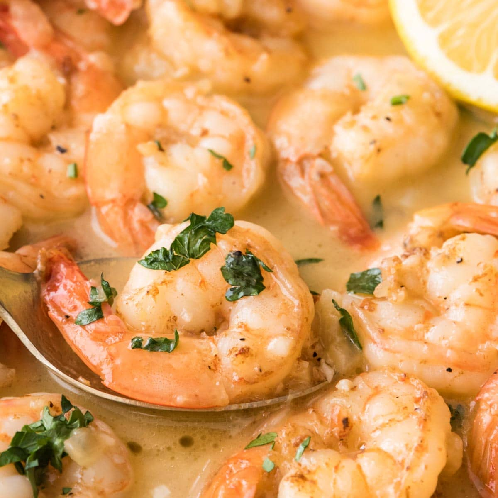

Garlic Butter Shrimp
Garlic Butter Shrimp is a quick and flavorful dish featuring tender shrimp cooked in garlic, and lemon.
Perfect for a fast yet delicious meal, it pairs well with rice, pasta, or bread.
Simple ingredients and minimal prep make it an easy favorite!

Ingredients:
- 1 pound (450g) large shrimp, peeled and deveined
- tablespoons unsalted butter
- 4 cloves garlic, minced
- 1 tablespoon olive oil
- 1 teaspoon paprika
- teaspoon crushed red pepper flakes (optional)
- Salt and pepper to taste
- 2 tablespoons fresh parsley, chopped
- Juice of 1 lemon
- Cooked rice or pasta (optional, for serving)
Direction
- the Shrimp: Pat the shrimp dry with paper towels. Season them with salt, pepper, and paprika.
- Heat the Pan: In a large skillet, heat the olive oil over medium-high heat. Add the shrimp to the pan and
cook for about 1-2 minutes per side until they turn pink and are cooked through. Remove the shrimp from the
pan and set aside.
the Garlic Butter: In the same skillet, reduce the heat to medium and add the butter. Once the butter has
melted, add the minced garlic and red pepper flakes (if using). Cook for about 1-2 minutes, stirring
constantly to prevent the garlic from burning.
-
Combine: Add the cooked shrimp back into the pan. Toss the shrimp in the garlic butter mixture until they're
well coated. Squeeze the lemon juice over the shrimp and stir in the fresh parsley.
-
Serve: Serve the garlic butter shrimp over rice, pasta, or with a side of crusty bread. Enjoy!
Nutrition Facts (per serving, serves 4):
- Calories: 220 kcal
- Protein: 24g
- Carbohydrates: 3g
- Fat: 12g
- Cholesterol: 250mg
- Sodium: 430mg
- Fiber: 0g
- Sugar: 0g